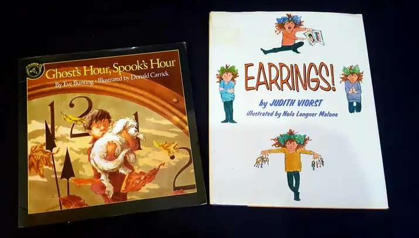

Welcome to Love Though Literacy Project

Who We Are
Love Through Literacy Project seeks to nurture joyful and fluent
readerss in Uganda. Acquiring a variety of engaging books for children is
a challenge for many famillies. The Love Though Literacy Profect provides
children and adults with access to great reading books in a setting where
they can interact with caring and qualified adults who help with the
development of the reading skills and strategies.
Nurturing Lifelong Readers One World at a Time !